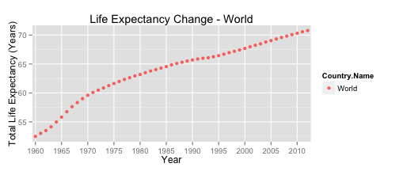

World Health Monitor
Attribution: Wikimedia Creative Commons
{kind=link}
Goal
To provide a simple tool for visualising the World Bank data on life expectancy, and in the future to expand to other areas.
Ross Hagan
Attribution: Wikimedia Creative Commons
To provide a simple tool for visualising the World Bank data on life expectancy, and in the future to expand to other areas.
What is the global life expectancy in 2010?
It's less than the highest answer, and greater than the lowest answer.
Well done! 70 is a little on the low side - let's monitor our situation. If only we had a way to do that in an easy to read way...!
library(shiny); library(ggplot2); library(lubridate); library(dplyr); library(reshape2)
wbd <- read.csv("worldbank/8_Topic_en_csv_v2.csv", skip = 2, na.strings = c("", " "))
fleb <- wbd[wbd$Indicator.Code == "SP.DYN.LE00.IN",]
cols <- names(fleb)
excludeIndex <- cols %in% c("X2013", "X2014", "X")
leb <- fleb[,!excludeIndex]; leb <- leb[complete.cases(leb),]
leb <- melt(leb); leb <- mutate(leb, year = gsub("X", "", variable))
leb <- leb[leb$Country.Name == "World", ]
yearLabs <- seq(1960, 2012, by = 5)
ggplot(leb, aes(x = year, y = value, color = Country.Name)) + geom_point() +
labs(list(x= "Year", y= "Total Life Expectancy (Years)",
title = "Life Expectancy Change - World")) +
scale_x_discrete(breaks = yearLabs, labels = as.character(yearLabs))

See more at World Health Monitor